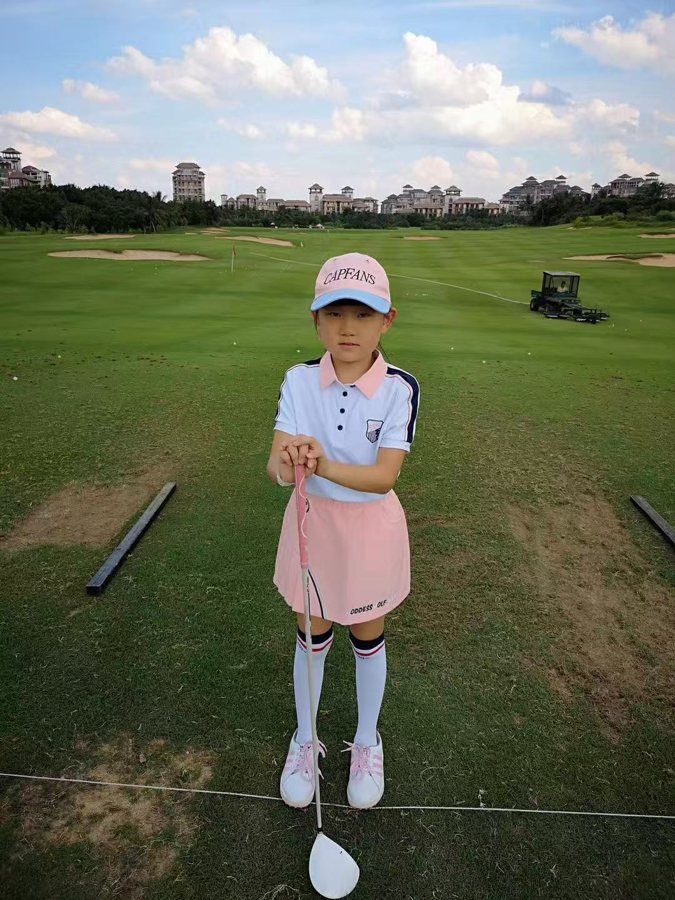
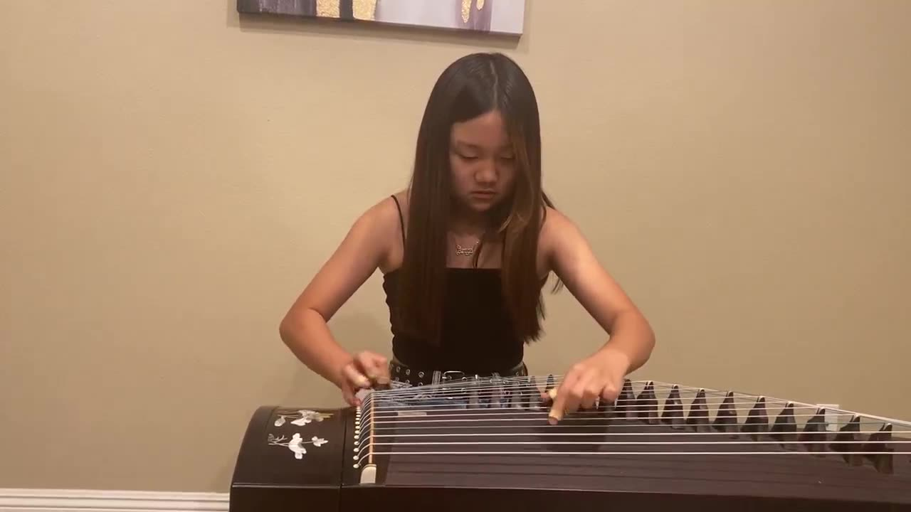

01 / About me
About me
I was born in China and moved to the United States as a kid. I grew up in Irvine, California, went to Northwood High School, and now I’m at Georgia Tech studying Electrical Engineering. I speak English and Mandarin, and I use both every week.
//Why electrical engineering
In high school I spent most of my free time on projects that mixed building and testing. I was the technical lead for my team in NASA Student Launch, where we flew a high-power rocket to about one mile, and I did a research project on a suspension system that turns a car’s bouncing into electricity. Both projects kept pulling me toward the electronics: sensors, control, and getting a signal you can trust.
At Georgia Tech I found the part I like most, which is chip design. There’s something satisfying about writing RTL, watching it turn into a real layout, and then fixing every timing and DRC problem until the tools come back clean. My threads are Signal & Information Processing and Circuit Technology, which line up well with that.
//What I do on campus
- Silicon Jackets. Georgia Tech’s chip design team. I’m a physical design engineer and run RTL-to-GDS flows in Cadence Innovus: floorplanning, clock tree synthesis, routing, timing closure and DRC fixes.
- GAMMA lab research. I work on Simulink models of analog and mixed-signal circuits and on a MATLAB optimizer that sizes OTA amplifiers.
- Mechatronics & Motivation VIP. I co-designed and hand-assembled a wearable EMG board on a flexible PCB.
- Residence Hall Association. As Meetings Coordinator I ran our weekly meetings, used RHA funds on things residents voted for, like volleyball nets and lamps, and helped put on events such as a Thanksgiving dinner and a Super Bowl watch party.
- Peer tutoring. I’m a registered peer tutor at Georgia Tech for math, physics and CS.
//Teaching
I’ve been tutoring for more than five years. I also run my own bilingual tutoring business for families around Gwinnett County, covering SAT prep, school math, reading and ESL. I make the worksheets and practice sets for each student from scratch, based on what that student actually needs to work on.
Before college I taught weekly Scratch coding classes with canCode to about 30 kids in underserved communities.

//Outside engineering
Golf and tennis
I’ve played golf for about ten years. I played varsity all through high school and competed in international junior tours, including a runner-up finish on the Southern California PGA Players’ Tour in 2022. Tennis is my other sport, and I played varsity tennis too.

Guzheng
The guzheng is a 21-string Chinese zither. You tune it by sliding a bridge under each string and pluck with picks taped to your fingers. I’ve played since I was young, earned the Central Conservatory of Music Level 8 certificate (out of 9), and performed with the California Youth Chinese Symphony.
